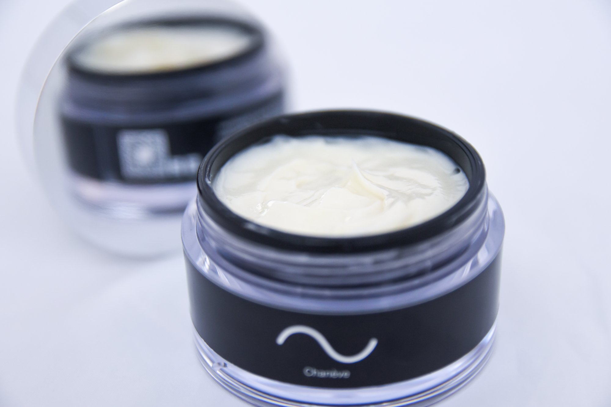
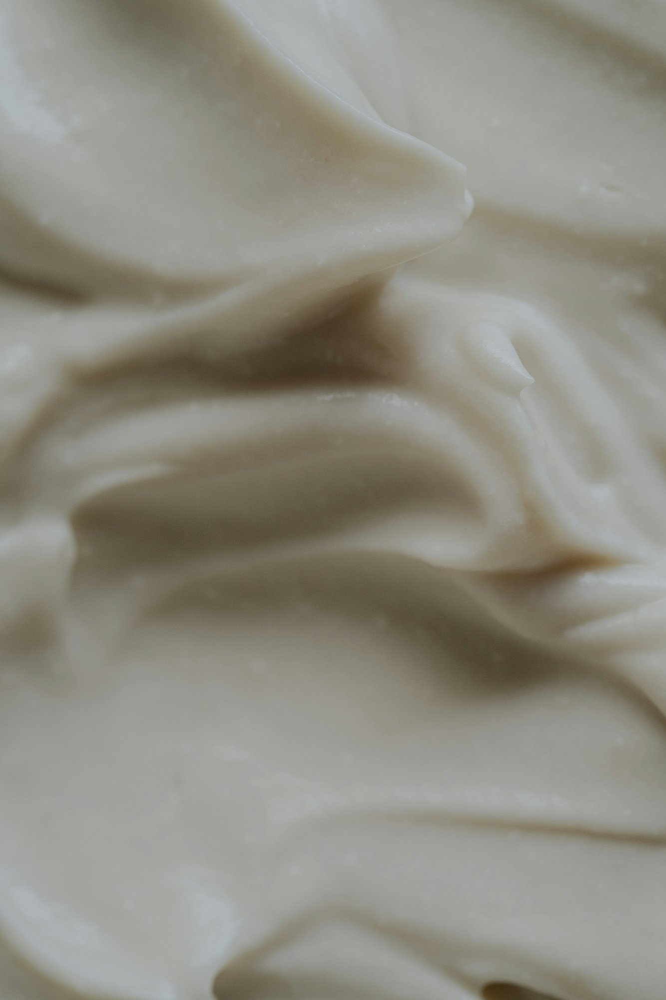

Chanève belooft geen wonderen. Wel een formule die opbouwend werkt — voor een huid die bij dagelijks gebruik zichtbaar rustiger, steviger en egaler aanvoelt, met minder zichtbare lijntjes en een egalere teint.

Dat is geen gegeven.
De huid verandert op meerdere fronten tegelijk. Vochtverlies, collageenafbraak, pigmentatie, barrièrefunctie — het zijn processen die samen bepalen hoe je huid eruitziet en aanvoelt. Chanève werkt tegelijkertijd aan meerdere van die processen — opbouwend, bij dagelijks gebruik.

De meeste crèmes pakken één probleem aan. Chanève werkt tegelijkertijd aan vochtbalans, stevigheid en een egale teint — en helpt zo zichtbaar bij lijntjes, vlekken en een huid die minder rustig aanvoelt. Dag en nacht. Opbouwend bij dagelijks gebruik.
Dat noemen we Structural Skincare: huidverzorging die werkt aan de basis, niet aan het oppervlak.
Geen snelle correctie, maar een formule die opbouwend werkt aan meerdere fronten tegelijk — voor een huid die bij dagelijks gebruik zichtbaar rustiger, steviger en egaler wordt.
Het begon met zijn moeder. Ze was in China geweest om vrienden en familie te bezoeken. Ze bleek ook bij een Chinese beauty kliniek langs te zijn geweest. Toen ze terugkwam, viel hem iets op wat hij niet had verwacht — haar huid. Stralend. Stevig. Nauwelijks rimpels. Anders op een manier die hij moeilijk kon negeren.
Hij begon te zoeken. En vond. Wetenschappelijke literatuur over de werkzame verbindingen in de ingrediënten die ze had gebruikt bestond al jaren — in studies, in publicaties, in een lange traditie van Aziatische kruidenkennis. Maar diezelfde ingrediënten waren vrijwel afwezig in moderne cosmetica.
Dat was het begin van meer dan vijf jaar zoeken, testen en verfijnen. Met één doel: een crème die je elke dag gebruikt. Eenvoudig. Zonder overbodige toevoegingen die afleiden van wat werkt.
Het resultaat is Chanève.
— De oprichter van ChanèveDe werkzame verbindingen in de sleutelingrediënten van Chanève zijn in onafhankelijk wetenschappelijk onderzoek bestudeerd op hun werking op de huid. Wij baseren ons op gepubliceerde studies.
Twee van de sleutelingrediënten, Astragalus Membranaceus en Sophora Japonica, komen uit een eeuwenlange Aziatische kruidentraditie en worden al generaties gebruikt vanwege hun effect op huidbalans. Die kennis combineren we met moderne cosmetische wetenschap.
Geen quick fix. Wel een formule met een echte basis — die opbouwend werkt en elke dag een beetje verder gaat.
Dit zijn de belangrijkste ingrediënten van Chanève — wat ze zijn en waarom ze erin zitten.
Aqua, Glycerin, Cetearyl Alcohol, Glyceryl Stearate, PEG-100 Stearate, Caprylic/Capric Triglyceride, Butyrospermum Parkii Butter, Simmondsia Chinensis Seed Oil, Vitis Vinifera Seed Oil, Argania Spinosa Kernel Oil, Squalane, Cera Alba, Polyglyceryl-4 Stearate, Dimethicone, Sodium Hyaluronate, Tocopheryl Acetate, Astragalus Membranaceus Root Extract, Sophora Japonica Flower Extract, Zinc Ricinoleate, Phenoxyethanol, Ethylhexylglycerin, Citrus Bergamia Risso Peel Oil, Citric Acid, Synthetic Fluorphlogopite, Titanium Dioxide, Tin Oxide
Chanève bevat geen SPF. Wij raden aan overdag een apart zonnebrandmiddel te gebruiken.
Voor wie merkt dat haar huid verandert — en daar iets aan wil doen, zonder een ingewikkelde routine.
Voor wie geen tien producten wil, maar één crème die klopt.
Ook voor mannen die hetzelfde zoeken. Zonder gedoe.
Schrijf je in en ontvang als eerste bericht wanneer Chanève beschikbaar is.